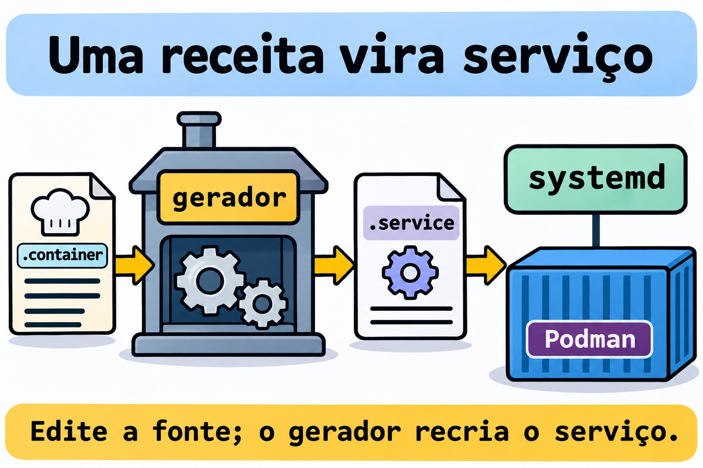
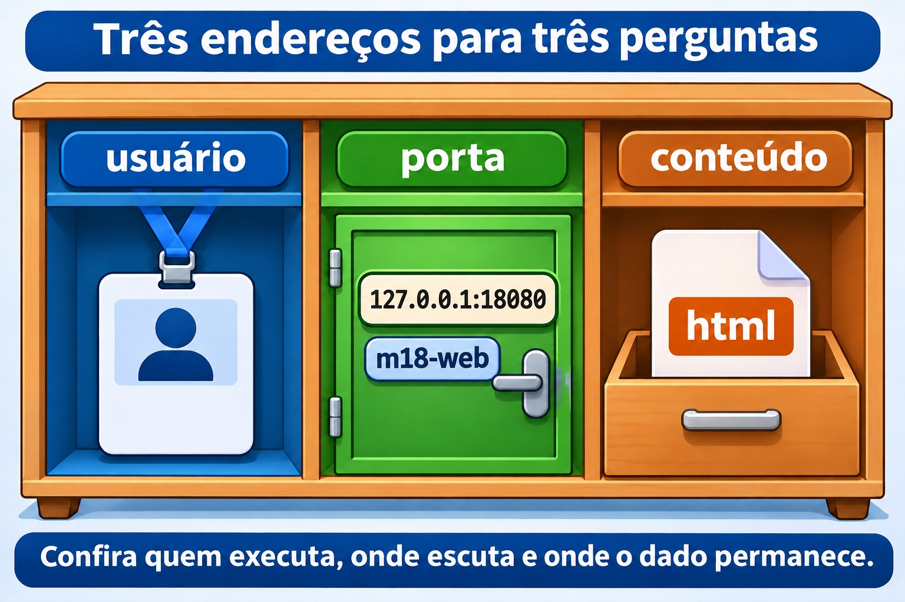
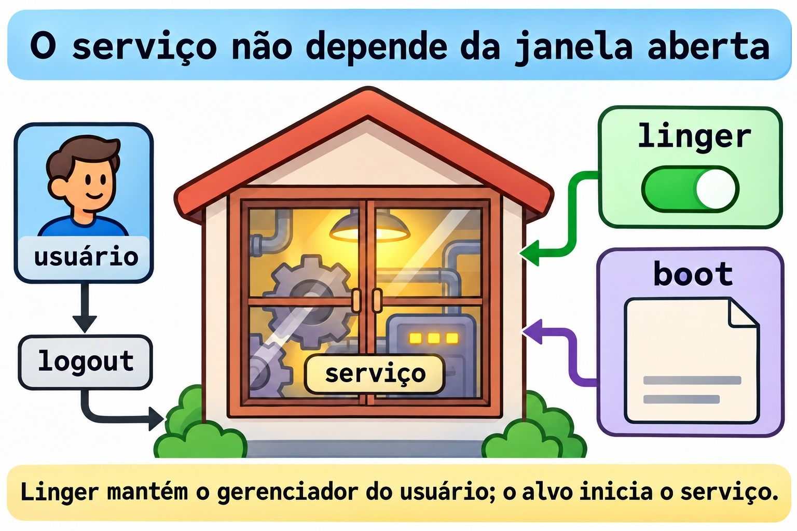

Aula 18.3 · Contêiner como serviço
O coração desta aula: o gerenciador do usuário inicia o serviço a partir do Quadlet; a sessão aberta não deve ser a sua dependência.
| Ficha | Plano de trabalho |
|---|---|
| Módulo | M18 · Podman, aula 3 de 5 |
| Quando | Semana 25 |
| Ao final | Criar e conferir um serviço rootless persistente após boot sem login do dono |
| Pré-requisitos | 18.1 e 18.2; imagem por digest, conteúdo persistente e porta liberada |
| Duração | 80–100 minutos |
| Snapshot | m18a3-inicio e m18a3-fim apenas nas VMs de laboratório |
Trabalhe como student na VM 201, rocky-lab, e repita na VM 202, debian-lab. Não execute Podman no host Proxmox.
Preserve o diretório de conteúdo e o arquivo de imagem das aulas anteriores. O contêiner manual já foi removido no fechamento da 18.2.
O serviço desta aula permanece para diagnóstico, construção de imagem e proxy reverso nos módulos seguintes. A limpeza aqui desfaz apenas os defeitos plantados.
Antes do laboratório, crie o snapshot da VM pelo procedimento conhecido e confira que o console da VM continua disponível. Não faça snapshot do host para proteger uma mudança no convidado.
1 · Aquecimento
Responda sem consultar os comandos. Volte às respostas depois do reboot de conferência.
- Que parte do site sobrevive quando o contêiner é removido?
- Publicar uma porta apenas no loopback permite acesso direto de outro computador?
- Um processo iniciado pelo terminal possui automaticamente uma política de boot?
2 · Por que importa
O site funciona quando você está conectado. Depois de uma manutenção, ninguém entra como dono e o serviço não aparece. A imagem não mudou; faltou definir quem deve iniciar o trabalho e quando.
Um segundo erro é colocar um usuário dentro de uma unidade de sistema e chamar isso de rootless. O lugar da unidade, o gerenciador que a lê e a identidade do processo precisam corresponder.
Nesta aula você entrega uma fonte legível, um serviço gerado, dados fora do contêiner e uma evidência de início sem login. Esses quatro objetos respondem perguntas diferentes.
Ponte Windows
Compare o gerenciador de serviços com uma janela de terminal. Fechar a janela não deve determinar o ciclo de vida de um serviço. Aqui o gerenciador pertence a um usuário, com seu próprio contexto.
3 · Modelo mental


O arquivo Quadlet é a receita. O gerador transforma essa receita numa unidade que o systemd entende. Você mantém a fonte; não corrige o arquivo gerado como se fosse a origem.
| Objeto | Pergunta |
|---|---|
.container | O que deve ser executado? |
.service | O que o gerenciador recebeu? |
| Gerenciador do usuário | Quem acompanha o serviço? |
| Conteúdo persistente | Onde permanece o dado? |
Linger permite que o gerenciador do usuário seja iniciado no boot e continue depois do logout. Ele não escreve o Quadlet nem escolhe sozinho qual serviço deve iniciar.
4 · O essencial
Quadlet exige cgroup v2 e uma versão instalada que ofereça o gerador e as opções usadas. Confira o manual local; se ele não existir, resolva o pré-requisito pelo repositório oficial da distribuição.
Não instale um pacote aleatório nem substitua o serviço por um comando de geração antigo para fazer a aula parecer concluída. Registre versão e lacuna.
A fonte rootless fica em ~/.config/containers/systemd/. O nome desta bancada é m18-web.container; o serviço será m18-web.service e o contêiner será m18-web.
A imagem já foi obtida por digest. O arquivo de ambiente guarda essa referência, mas o campo de imagem do Quadlet precisa receber o valor literal renderizado; ele não expande uma variável de shell automaticamente.
Não use uma seção de serviço com outro usuário para simular uma unidade rootless. Use o gerenciador do próprio dono.
Rocky × Debian
| Questão | Rocky | Debian |
|---|---|---|
| Pacotes | Repositório oficial da família RPM | Repositório oficial da família DEB |
| Conteúdo montado | Permissões e rótulo SELinux | Permissões e controles ativos do sistema |
| Serviço rootless | Gerenciador de student | Gerenciador de student |
A opção :Z relabela somente o diretório exclusivo do exercício quando SELinux está ativo. Não a aplique à sua casa inteira nem a uma pasta compartilhada por outros serviços.
Decida 1
O serviço gerado não aceita ser habilitado como uma unidade instalada comum. O que você faz?
A. Edita o arquivo gerado e insiste na habilitação. B. Mantém a política de instalação na fonte Quadlet e recarrega o gerenciador. C. Executa Podman como root para contornar o usuário.
5 · Lab guiado
Entre diretamente por SSH como o dono. Uma troca de usuário incompleta pode deixar o terminal sem o barramento e o diretório de execução corretos.
As guardas aceitam somente Podman local rootless e cgroup v2. Um caminho XDG personalizado exige um plano explícito: aqui é usado o caminho padrão da home.
Passo 1 · Conferir dono, versão e contexto
Palpite: o inventário do usuário atual é o mesmo que o inventário do administrador?
test "$(id -un)" = student || exit 1
test "$(id -u)" -ne 0 || exit 1
test -z "${CONTAINER_HOST-}${CONTAINER_CONNECTION-}" || exit 1
test "$(podman info --format '{{.Host.Security.Rootless}}')" = true || exit 1
case "$(hostname -s)" in rocky-lab|debian-lab) ;; *) exit 1 ;; esac
id
printf '%s\n' "$XDG_RUNTIME_DIR"
podman version
podman info --format '{{.Host.CgroupsVersion}} {{.Host.Security.Rootless}}'
test "$(podman info --format '{{.Host.CgroupsVersion}}')" = v2 || exit 1
systemctl --user show-environment || exit 1
man podman-systemd.unit
podman ps -a --filter label=io.course.module=M18Saída esperada: dono correto, contexto rootless e cgroup v2. O gerenciador do usuário responde. Se o manual ou uma opção faltar, interrompa a criação.
Verifique: a sessão pertence à VM certa e à identidade certa. O host Proxmox fica fora do roteiro.
Passo 2 · Conferir conteúdo, imagem e porta
Palpite: um contêiner manual esquecido pode impedir o serviço de iniciar sem alterar a imagem?
test -z "${XDG_CONFIG_HOME-}" || test "$XDG_CONFIG_HOME" = "$HOME/.config" || exit 1
test -f "$HOME/m18-lab/image.env" && test -O "$HOME/m18-lab/image.env" || exit 1
. "$HOME/m18-lab/image.env" || exit 1
[[ "$M18_IMAGE" =~ ^docker\.io/nginxinc/nginx-unprivileged@sha256:[[:xdigit:]]{64}$ ]] || exit 1
podman image exists "$M18_IMAGE" || exit 1
test -r "$HOME/m18-lab/site/index.html" || exit 1
stat -c '%a %U:%G %n' "$HOME/m18-lab/site" "$HOME/m18-lab/site/index.html"
sha256sum "$HOME/m18-lab/site/index.html"
M18_LISTEN=$(ss -H -ltn 'sport = :18080') || exit 1
test -z "$M18_LISTEN" || { printf '%s\n' 'STOP: porta ocupada'; exit 1; }
if podman container exists m18-web; then
printf '%s\n' 'STOP: nome ocupado' >&2; exit 1
else
M18_RC=$?; test "$M18_RC" -eq 1 || exit 1
fi
if podman container exists m18-web-manual; then
printf '%s\n' 'STOP: nome ocupado' >&2; exit 1
else
M18_RC=$?; test "$M18_RC" -eq 1 || exit 1
fiSaída esperada: conteúdo preservado, imagem disponível e nenhum ouvinte na porta. A existência de um nome ocupado fecha a etapa, não autoriza removê-lo sem conferir a origem.
Verifique: o diretório está em modo 755 e o documento em 644, ambos pertencentes ao dono previsto. Confira a reserva da porta no seu diário; pare se qualquer processo já a usa.
Passo 3 · Escrever a fonte com valor literal
Palpite: recarregar o gerenciador cria a fonte ou lê uma fonte que você já escreveu?
systemctl --user daemon-reload || exit 1
M18_UNITS=$(systemctl --user list-unit-files --all --no-legend) || exit 1
if printf '%s\n' "$M18_UNITS" | awk '$1 == "m18-web.service" {found=1} END {exit !found}'; then
printf '%s\n' 'STOP: m18-web.service already exists' >&2
exit 1
fi
install -d -m 0700 "$HOME/.config/containers/systemd" || exit 1
UNIT="$HOME/.config/containers/systemd/m18-web.container"
test ! -e "$UNIT" || exit 1
umask 077
cat > "$UNIT" <<EOF || exit 1
[Unit]
Description=M18 rootless web
[Container]
Image=$M18_IMAGE
Pull=never
ContainerName=m18-web
Label=io.course.module=M18
PublishPort=127.0.0.1:18080:8080
Volume=%h/m18-lab/site:/usr/share/nginx/html:ro,Z
LogDriver=journald
NoNewPrivileges=true
[Service]
Restart=on-failure
TimeoutStartSec=900
[Install]
WantedBy=default.target
EOF
cat "$UNIT"
systemctl --user daemon-reload
systemctl --user cat m18-web.serviceSaída esperada: a fonte contém o digest real, sem variável pendente; a unidade gerada aponta para a imagem e o diretório previstos.
Verifique: a fonte termina com a seção de instalação e o alvo do usuário. Não execute habilitação sobre a unidade gerada e não copie sua saída para substituir o Quadlet.
Passo 4 · Iniciar e relacionar as três provas
Palpite: uma unidade ativa prova que o conteúdo HTTP é o arquivo montado?


systemctl --user start m18-web.service || exit 1
systemctl --user status m18-web.service --no-pager
podman inspect m18-web --format '{{index .Config.Labels "io.course.module"}}'
podman port m18-web
curl --retry 10 --retry-delay 1 --retry-all-errors --max-time 5 --fail --silent --show-error http://127.0.0.1:18080/
sudo journalctl _UID="$(id -u student)" _SYSTEMD_USER_UNIT=m18-web.service -b --no-pager -n 30
podman logs --tail 20 m18-webSaída esperada: serviço ativo, rótulo da bancada, publicação no loopback e conteúdo conhecido. Os logs registram os eventos reais; não há linhas de sucesso inventadas para comparar.
Verifique: compare resposta, documento persistente e montagem. Se o serviço inicia com outro conteúdo, investigue o caminho antes de mudar permissões.
Passo 5 · Registrar e habilitar linger
Palpite: linger sozinho escolhe o contêiner que deve subir?


test ! -e "$HOME/m18-lab/linger-before.txt" || exit 1
M18_LINGER=$(loginctl show-user student -p Linger --value) || exit 1
case "$M18_LINGER" in yes|no) ;; *) exit 1 ;; esac
printf '%s\n' "$M18_LINGER" > "$HOME/m18-lab/linger-before.txt" || exit 1
cat "$HOME/m18-lab/linger-before.txt"
sudo loginctl enable-linger student || exit 1
test "$(loginctl show-user student -p Linger --value)" = yes || exit 1
loginctl show-user student -p Linger -p State
systemctl --user is-active m18-web.serviceSaída esperada: estado anterior preservado e linger habilitado para o dono. O serviço continua com a mesma identidade e o mesmo diretório de conteúdo.
Verifique: anote o UID do dono e a hora. A política de boot depende também do alvo na fonte. Fechar somente uma janela não prova ausência de todas as sessões do dono.
Passo 6 · Provar boot antes do login do dono
Palpite: entrar por SSH como o dono antes da consulta estraga qual parte da evidência?
Reboot de conferência: encerre os trabalhos na VM, confira o console e reinicie somente a VM de estudo. Após o boot, não entre como o dono ainda.
case "$(hostname -s)" in rocky-lab|debian-lab) ;; *) exit 1 ;; esac
sudo rebootNo Debian 13, linger pode criar uma sessão de classe manager: é o gerenciador do usuário, não um login interativo. A conferência abaixo considera apenas a classe user, consultando cada sessão de student com show-session, disponível também no Rocky 9.
No console da VM, use a conta administrativa de emergência já preparada no curso, sem iniciar uma sessão de student. Se não dispõe desse acesso, prepare-o antes do reboot; não apresente uma sessão do dono como prova de início sem login.
M18_UID=$(id -u student)
loginctl list-sessions
loginctl show-user student --all -p Linger -p Sessions
M18_SESSIONS=$(loginctl show-user student --all -p Sessions --value) || exit 1
M18_USER_SESSIONS=
for M18_SESSION in $M18_SESSIONS; do
M18_CLASS=$(loginctl show-session "$M18_SESSION" -p Class --value) || exit 1
if test "$M18_CLASS" = user; then M18_USER_SESSIONS="$M18_USER_SESSIONS $M18_SESSION"; fi
done
test -z "$M18_USER_SESSIONS" || { printf '%s\n' 'STOP: student logged in' >&2; exit 1; }
systemctl status "user@$M18_UID.service" --no-pager
ss -ltnp 'sport = :18080'
curl --retry 10 --retry-delay 1 --retry-all-errors --max-time 5 --fail --silent --show-error http://127.0.0.1:18080/
journalctl -b _UID="$M18_UID" _SYSTEMD_USER_UNIT=m18-web.service --no-pagerSaída esperada: gerenciador do dono e resposta HTTP antes de qualquer login desse dono. A lista de sessões e o horário fazem parte da evidência.
Verifique: preserve a sequência temporal no diário externo. Só depois entre normalmente como student e confira serviço, imagem e documento novamente.
No Rocky, o journal persistente pode não ter um journal separado por usuário. Por isso as leituras do serviço usam sudo e filtram simultaneamente o UID de student e a unidade de usuário; Podman e systemctl --user continuam sendo executados pelo dono sem sudo.
6 · Quebre e conserte
Faça uma quebra por vez, como dono, apenas na fonte desta bancada. Antes, preserve uma cópia privada; se ela já existir, examine-a em vez de sobrescrever.
UNIT="$HOME/.config/containers/systemd/m18-web.container"
test ! -e "$HOME/m18-lab/m18-web.container.good" || exit 1
test -f "$UNIT" && test -O "$UNIT" || exit 1
grep -qxF 'ContainerName=m18-web' "$UNIT" || exit 1
grep -qxF 'Label=io.course.module=M18' "$UNIT" || exit 1
cp -- "$UNIT" "$HOME/m18-lab/m18-web.container.good" || exit 1Quebra 1 · Fonte inválida
Sintoma: o gerenciador não gera a unidade esperada depois de uma edição na seção de contêiner.
systemctl --user stop m18-web.service
sed -i 's/^Image=/ImageErrada=/' "$UNIT"
systemctl --user daemon-reload
systemctl --user status m18-web.service --no-pagerInvestigação: leia a fonte, a ajuda local do Quadlet e as mensagens do gerenciador. A unidade anterior carregada pode confundir; não conclua apenas pela presença de um nome na lista.
Causa: uma chave obrigatória foi substituída por um nome que não descreve a imagem.
Conserto: restaure somente a fonte conhecida e recarregue o gerenciador.
cp -- "$HOME/m18-lab/m18-web.container.good" "$UNIT" || exit 1
systemctl --user daemon-reload
systemctl --user start m18-web.serviceVerifique: a unidade aponta ao digest correto e o documento volta a responder.
Prevenção: confira a fonte e a unidade gerada antes de atribuir a falha à aplicação.
Quebra 2 · Porta publicada no lugar errado
Sintoma: o serviço está ativo, mas a porta esperada não responde.
Confirme que a porta alternativa está livre antes de plantar a mudança; não use uma porta de outro serviço.
M18_LISTEN=$(ss -H -ltn 'sport = :18081') || exit 1
test -z "$M18_LISTEN" || exit 1
systemctl --user stop m18-web.service
sed -i 's/127.0.0.1:18080:8080/127.0.0.1:18081:8080/' "$UNIT"
systemctl --user daemon-reload
systemctl --user start m18-web.service
podman port m18-webInvestigação: compare publicação real, fonte e endereço do cliente.
Causa: o cliente e a publicação passaram a usar portas diferentes.
Conserto: restaure a fonte conhecida e reinicie somente o serviço da bancada.
systemctl --user stop m18-web.service
cp -- "$HOME/m18-lab/m18-web.container.good" "$UNIT" || exit 1
systemctl --user daemon-reload
systemctl --user start m18-web.service
curl --retry 10 --retry-delay 1 --retry-all-errors --max-time 5 --fail http://127.0.0.1:18080/Verifique: a porta alternativa não ficou como dependência escondida.
Prevenção: registre endereço de escuta, porta publicada e porta interna separadamente.
Quebra 3 · Confundir fonte e unidade gerada
Sintoma: uma anotação recomenda editar o arquivo gerado para tornar o conserto persistente.
Investigação: localize a origem e compare a unidade exibida pelo gerenciador. Esta quebra é documental; não edite o arquivo gerado.
systemctl --user cat m18-web.service
cat "$UNIT"Causa: o resultado da geração foi tratado como fonte de configuração.
Conserto: reescreva a anotação com a edição da fonte e a recarga do gerenciador.
Verifique: outra pessoa consegue repetir a mudança sem depender de um arquivo transitório.
Prevenção: mantenha a fonte versionável e o estado observado como evidência separada.
7 · Armadilhas
A consulta ao serviço de sistema e a consulta ao serviço do usuário pertencem a gerenciadores diferentes. Uma resposta vazia de um deles não descreve todos os contêineres da máquina.
Não misture o contêiner manual antigo com o contêiner gerenciado. Nome e porta pertencem agora ao serviço; criar outro processo com os mesmos recursos fabrica concorrência.
Decida 2
Depois do reboot, você entrou como dono antes de testar. Qual conclusão é honesta?
A. O teste precisa ser repetido sem login do dono antes da observação. B. O conteúdo persistente foi apagado. C. O serviço certamente iniciou sem login.
8 · Quiz
- Por que a fonte deve conter o digest literal em vez de uma variável de shell não expandida?
- Qual a função de linger e qual a função do alvo de instalação?
- Por que a unidade gerada não deve ser editada como fonte?
- O que a resposta HTTP prova além do estado ativo do serviço?
- Por que o observador do reboot não deve entrar como student primeiro?
- O que fica preservado para a aula seguinte?
9 · Lembrete
| Pergunta | Consulta |
|---|---|
| Fonte | cat ~/.config/containers/systemd/m18-web.container |
| Unidade | systemctl --user cat m18-web.service |
| Estado | systemctl --user status m18-web.service |
| Eventos | sudo journalctl _UID="$(id -u student)" _SYSTEMD_USER_UNIT=m18-web.service -b |
| Publicação | podman port m18-web |
Flashcards: crie cartões sobre fonte, gerador, serviço, dono, linger e prova de boot. Revise em D+1, D+3, D+7 e D+21.
!explica 18.3 Quadlet, gerenciador do usuario e linger
!feynman 18.3 vou explicar por que editar a fonte e provar boot sem login
!quiz 18.310 · Checklist e fechamento
Restaure a fonte conhecida, recarregue e confirme a porta original. Preserve serviço, diretório do site, referência da imagem e evidência do estado anterior de linger.
Não desabilite linger no fechamento: o próximo laboratório depende do serviço. Quando o curso autorizar a remoção definitiva, examine os demais serviços do dono antes de voltar ao estado anterior.
Se linger já estava habilitado antes do módulo, a limpeza não deve desabilitá-lo. O arquivo de estado anterior evita que a configuração alheia seja tratada como sobra do exercício.
- [ ] Identifiquei a VM e o dono.
- [ ] Conferi cgroup v2 e o gerador instalado.
- [ ] Mantive o digest literal e o conteúdo persistente.
- [ ] Conferi o serviço e a resposta HTTP.
- [ ] Provei o início antes do login do dono.
- [ ] Desfiz as quebras sem alterar serviços alheios.
Último exercício: explique por que arquivo existente, serviço ativo e serviço iniciado sem login são três provas distintas. Cite o dado que você coletou para cada uma.
Crie o snapshot de fim somente após restaurar a bancada e registrar a evidência. Um snapshot da VM não substitui a cópia do conteúdo que você sabe restaurar.
11 · Na vida real
Num ambiente autorizado, faça apenas leitura: identifique o dono de um serviço rootless, localize sua fonte e descreva o caminho do dado. Não reinicie nem habilite linger em uma conta real para completar a observação.
Se a fonte ou a evidência de boot não está disponível, registre a lacuna. Não transforme uma suposição de disponibilidade em garantia de continuidade.
12 · Aprofunde quando quiser
Compare com o manual da versão instalada antes de adotar uma opção nova. Esta aula não afirma que qualquer versão antiga aceita todas as chaves documentadas na versão mais recente.
Soluções comentadas
Aquecimento: o conteúdo montado permanece fora do contêiner; loopback não expõe diretamente a outros hosts; um processo manual não define uma política de boot.
Decida 1: B. A fonte guarda a política de instalação aplicada pelo gerador.
Decida 2: A. O login pode ter iniciado o gerenciador, então a sequência temporal precisa ser repetida.
Quiz 1: A expansão pertence à escrita da fonte; o Quadlet precisa receber uma referência de imagem válida.
Quiz 2: Linger mantém o gerenciador; o alvo de instalação liga a unidade à inicialização desejada.
Quiz 3: O gerador pode recriá-la, descartando uma alteração feita no resultado.
Quiz 4: Demonstra o caminho HTTP e permite comparar o documento realmente entregue.
Quiz 5: Porque esse login pode disparar o gerenciador e impedir atribuir o início ao boot.
Quiz 6: Fonte, serviço, imagem por digest, site e registro do estado anterior de linger.
← Aula18.2 · Rodar e persistir · Índice das aulas · Aula18.4 · Diagnosticar contêiner rootless →